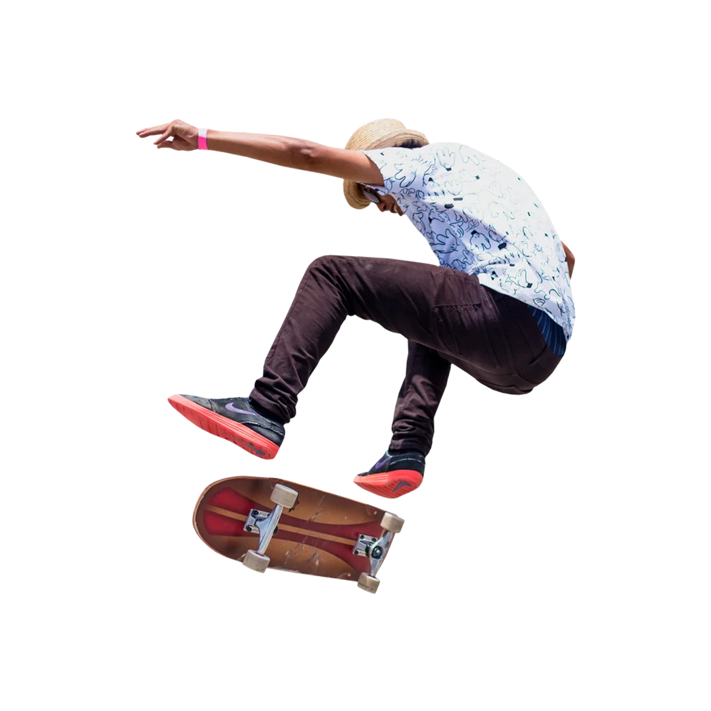

RUA ANDA JÃO' INTENSO
Salve rapa e salve massa... esse site foi criado com o propósito de divulgar a cultura do skateboard e passar um pouco da minha experiência nesse meio... mostrando um pouco dos passos iniciais.

Salve rapa e salve massa... esse site foi criado com o propósito de divulgar a cultura do skateboard e passar um pouco da minha experiência nesse meio... mostrando um pouco dos passos iniciais.